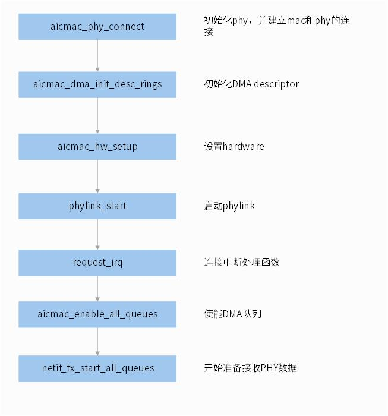
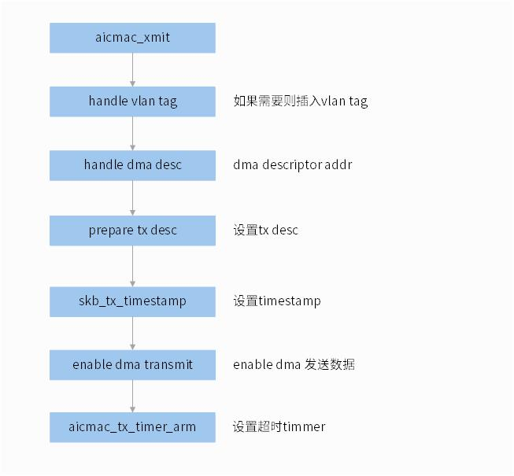
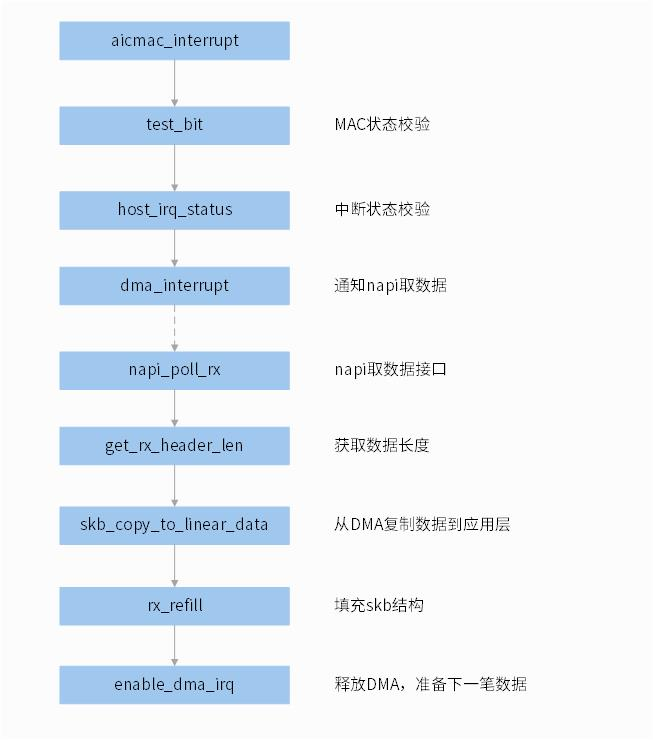
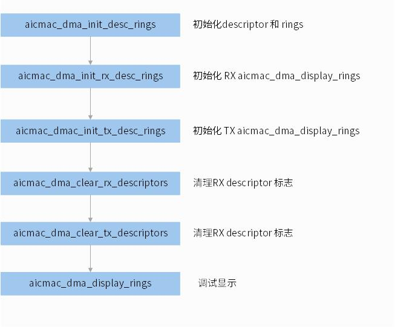

关键流程设计
Read time: 2 minute(s)
- 初始化流程
|-->aicmac_platform_get_resources |-->kzalloc aicma_resources |-->platform_get_irq_byname |-->devm_platform_ioremap_resource |-->aicmac_platform_get_config |-->aicmac_platform_init_data |-->aicmac_phy_init_data |-->aicmac_mac_init_data |-->aicmac_mdio_init_data |-->aicmac_mda_init_data |-->aicmac_napi_init_data |-->aicmac_1588_init_data |-->aicmac_platform_get_mac_addr |-->aicmac_platform_init_ioirq |-->handle clk: mac clk, pclk |-->aicmac_1588_init_clk |-->devm_reset_control_get |-->aicmac_core_init |-->devm_alloc_etherdev_mqs |-->netdev_priv(ndev) |-->create_singlethread_workqueue |-->aicmac_service_task |-->reset_control_assert |-->aicmac_mac_init |-->aicmac_mac_ip_init |-->aicmac_mac_reg_core_init |-->aicmac_dma_init |-->dma_set_mask_and_coherent |-->aicmac_napi_init |-->netif_set_real_num_rx_queues |-->netif_set_real_num_tx_queues |-->aicmac_core_setup_napiop |-->netif_napi_add(rx) |-->netif_napi_add(tx) |-->mutex_init |-->aicmac_mdio_register |-->mdiobus_alloc |-->of_mdiobus_register |-->mdiobus_get_phy |-->aicmac_phy_init |-->phylink_create |-->aicmac_1588_init |-->ptp_clock_register |-->register_netdev - 设备打开流程如果在终端执行 “ifconfig eth0 up”，则进行设备打开流程，函数 aicmac_open 被调用 .. code-block:
aicmac_open |-->aicmac_mac_reg_core_init |-->aicmac_mac_reg_init_basic_config(mac, dev); |-->aicmac_mac_reg_init_tx_func(mac, dev); |-->aicmac_mac_reg_init_rx_func(mac, dev); |-->aicmac_phy_connect |-->phylink_of_phy_connect |-->mdiobus_get_phy |-->phylink_connect_phy |-->aicmac_dma_ring_set_16kib_bfsize |-->aicmac_dma_ring_set_bfsize |-->aicmac_dma_alloc_dma_desc_resources |-->aicmac_dma_alloc_dma_rx_desc_resources |-->aicmac_dma_alloc_dma_rx_desc_resources |-->aicmac_dma_init_desc_rings |-->aicmac_dma_init_rx_desc_rings |-->aicmac_dma_init_tx_desc_rings |-->aicmac_dma_clear_rx_descriptors |-->aicmac_dma_clear_tx_descriptors |-->aicmac_hw_setup |-->aicmac_dma_init_engine |-->aicmac_mac_reg_reset |-->aicmac_mac_reg_set_umac_addr |-->aicmac_mac_reg_core_init |-->aicmac_mac_reg_rx_ipc_enable |-->aicmac_mac_reg_enable_mac |-->aicmac_dma_operation_mode |-->aicmac_dma_reg_operation_mode_rx |-->aicmac_dma_reg_operation_mode_tx |-->aicmac_dma_start_all_dma |-->aicmac_dma_reg_start_rx |-->aicmac_dma_reg_start_tx |-->aicmac_init_coalesce |-->aicmac_tx_timer |-->phylink_start |-->request_irq->aicmac_interrupt |-->aicmac_enable_all_queues |-->netif_tx_start_all_queues - 数据发送流程执行任何的发送操作(如 ping 命令)，aicmac_xmit 将被调用 .. code-block:
aicmac_xmit |-->aicmac_tx_avail |-->aicmac_vlan_insert |-->aicmac_dma_ring_is_jumbo_frm |-->aicmac_dma_ring_jumbo_frm |-->aicmac_dma_desc_set_addr |-->aicmac_dma_desc_prepare_tx_desc |-->skb_tx_timestamp |-->netdev_tx_sent_queue |-->aicmac_dma_reg_enable_transmission |-->aicmac_tx_timer_arm
 - 数据接收流程有任何数据到达，MAC 将产生中断，则函数 aicmac_interrupt 被执行
aicmac_interrupt |-->aicmac_napi_check |-->invoke aicmac_napi_poll_rx |-->aicmac_rx |-->netif_msg_rx_status |-->aicmac_dma_desc_get_rx_status |-->dma_sync_single_for_cpu |-->skb_copy_to_linear_data |-->skb_put |-->page_pool_recycle_direct |-->skb_add_rx_frag |-->page_pool_release_page |-->aicmac_1588_get_rx_hwtstamp |-->skb_set_hash |-->skb_record_rx_queue |-->napi_gro_receive |-->aicmac_rx_refill |-->aicmac_dma_reg_enable_irq |-->aicmac_dma_set_operation_mode - DMA 初始化流程DMA 模块将在设备 Open 的时候初始化 .. code-block:
aicmac_dma_init_desc_rings |-->aicmac_dma_init_rx_desc_rings |-->aicmac_dma_clear_rx_descriptors |-->aicmac_dma_desc_init_rx_desc |-->aicmac_dma_init_rx_buffers |-->aicmac_dma_chain_init(RX,TX) |-->aicmac_dmac_init_tx_desc_rings |-->aicmac_dma_desc_clear |-->netdev_tx_reset_queue |-->aicmac_dma_clear_descriptors |-->aicmac_dma_clear_rx_descriptors |-->aicmac_dma_desc_init_rx_desc |-->aicmac_dma_clear_tx_descriptors |-->aicmac_dma_desc_init_tx_desc |-->aicmac_dma_display_rings